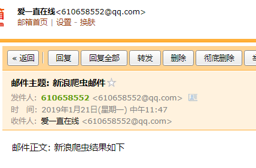
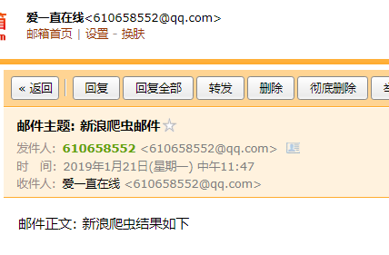

SMTP（Simple Mail Transfer Protocol）即简单邮件传输协议,它是一组用于由源地址到目的地址传送邮件的规则，由它来控制信件的中转方式。 python的smtplib提供了一种很方便的途径发送电子邮件。它对smtp协议进行了简单的封装。 Python创建 SMTP 对象语法如下：
import smtplib smtpObj = smtplib.SMTP( [host [, port [, local_hostname]]] )
参数
- host: SMTP 服务器主机。 你可以指定主机的ip地址或者域名如: runoob.com，这个是可选参数。
- port: 如果你提供了 host 参数, 你需要指定 SMTP 服务使用的端口号，一般情况下 SMTP 端口号为25。
- local_hostname: 如果 SMTP 在你的本机上，你只需要指定服务器地址为 localhost 即可。
- Python SMTP 对象使用 sendmail 方法发送邮件，语法如下：
- SMTP.sendmail(from_addr, to_addrs, msg[, mail_options, rcpt_options])
参数
- from_addr: 邮件发送者地址。
- to_addrs: 字符串列表，邮件发送地址。
- msg: 发送消息
这里要注意一下第三个参数，msg 是字符串，表示邮件。我们知道邮件一般由标题，发信人，收件人，邮件内容，附件等构成，发送邮件的时候，要注意 msg 的格式。这个格式就是 smtp 协议中定义的格式。
#!/usr/bin/python
# _*_ coding: utf-8 _*_
"""
@Time : 2019/1/21 11:11
@File : sendmail.py
@Software: PyCharm
"""
import smtplib
from email.mime.text import MIMEText
def send_qqmail(send_user, auth_code, contents, subject, recv_user):
"""
:param send_user: 发送者邮箱地址<全部包括后缀>，也就是邮箱登录账号
:param auth_code: 发送者邮箱的授权码，而非登录密码
:param contents: 邮箱地址正文
:param subject: 邮箱主题
:param recv_user: 接受邮箱地址
:return: QQ发送邮件
"""
ret = True
try:
mail_host = 'smtp.qq.com'
msg = MIMEText(contents, 'plain', 'utf-8') # 构造邮件正文
msg['From'] = send_user # 构造邮件头部
msg['To'] = recv_user # 接受者
msg['Subject'] = subject # 邮件主题
server = smtplib.SMTP_SSL(mail_host, 465) # qq->465, 163->25
server.login(send_user, auth_code) # 登录
server.sendmail(send_user, recv_user, msg.as_string())
except smtplib.SMTPException:
ret = False
finally:
server.quit() # 关闭连接
return ret
if __name__ == '__main__':
# send_qqmail('610658552@qq.com', 'bsswzfgmawesbcjd', '新浪爬虫测试结果', '新浪爬虫邮件', '610658552@qq.com')
ret = send_qqmail(send_user="610658552@qq.com",
auth_code="bsswzfgmawesbcjd",
contents='邮件正文: 新浪爬虫结果如下',
subject='邮件主题: 新浪爬虫邮件',
recv_user='610658552@qq.com')
if ret:
print("邮件发送成功")
else:
print("邮件发送失败")
运行
"C:\Program Files\Python37\python.exe" D:/code/code-django/sendmail.py 邮件发送成功
 
